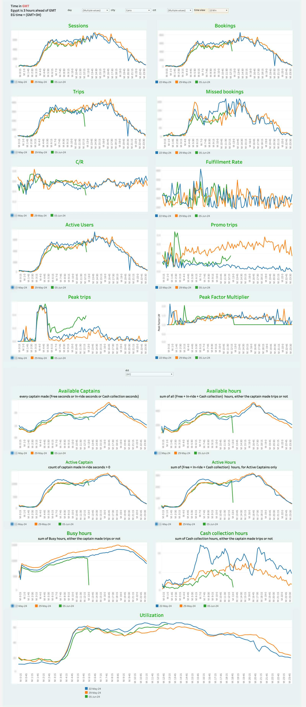

Real-Time Operations
Intraday marketplace visibility for Egypt and Pakistan: 15-minute-granularity views on live tables refreshing roughly every five minutes, with day-over-day comparison overlays from sessions all the way down to utilization.
Note on numbers: no figure from inside a client dashboard is presented here as an achievement. Published screenshots have absolute figures blurred.
01The Business Problem
Ops teams managed an intraday business with yesterday's report. A supply gap at 2pm, a demand spike after rain, a promo misfiring at launch — by the time the daily dashboard showed it, the moment to react was gone. The marketplace needed operational visibility: what is happening right now, and is it normal for this hour?
02My Role
Sole analyst on the product: the SQL against live tables, the 15-minute/hourly view architecture, the day-over-day comparison design, and the in-dashboard timezone documentation that kept a GMT pipeline readable for local ops teams.
03What I Built
Real-Time Egypt (V2)
A grid of metric trends — sessions, bookings, trips, missed bookings, C/R, fulfillment, active users, promo and peak trips, peak factor — plus a full supply block: available and active captains, available/active/busy hours, cash-collection hours, and a full-width utilization view. Three comparison days overlaid per chart.
Real-Time Pakistan
The same architecture deployed for a second market, with four comparison days overlaid and its own supply section — proving the design portable across markets rather than a one-off build.
15-Min / Hourly Toggle
One switch moves every chart between 15-minute slices (for incident forensics) and hourly aggregation (for shape reading) — same layout, same metrics, two operating altitudes.
Timezone & Partial-Day Handling
GMT-to-local conversion documented inside the dashboard, and today's partial curve simply ends at "now" against complete comparison days — no misleading extrapolation.
04Signature Build Details
05KPIs Defined & Governed
06Decisions Enabled
Real-Time Egypt — 15-minute view
(blur all absolute figures)assets/rt-egypt-15min.png
